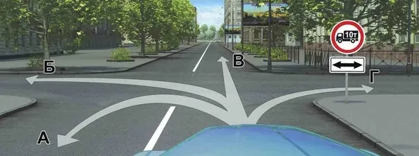
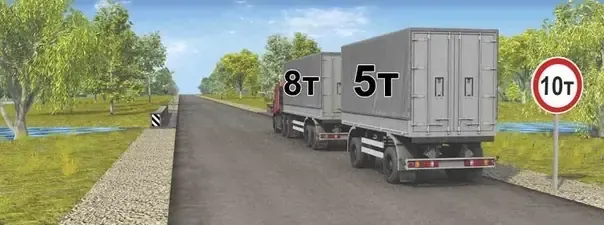

Разрешённая и фактическая масса в ПДД: как выбрать нужное число

Разрешённая максимальная масса — установленный изготовителем предел для транспортного средства с грузом, водителем и пассажирами. Фактическая масса — сколько оно весит в рассматриваемой ситуации. Для билета важно не только число в тоннах, но и то, какую массу требует сравнить правило или знак.
Разберём определение из A/B и две задачи C/D. Они выбраны потому, что показывают разные основания решения, а не как рейтинг трудности. Условия, варианты и ответы перенесены из базы приложения без изменений. В своих занятиях сначала проверьте выбранную категорию: одинаковая картинка в другом комплекте не гарантирует одинаковый вопрос.
Две массы: разные вопросы к одному автомобилю
| Что сравниваем | Что это означает | Чего не следует подставлять |
|---|---|---|
| Разрешённая максимальная масса | Максимально допустимая масса, установленная изготовителем, включая ТС, груз, водителя и пассажиров | Только грузоподъёмность или только массу пустой машины |
| Фактическая масса | Масса автомобиля или состава в заданном состоянии | Максимальный предел вместо реально указанного веса |
| Разрешённая максимальная масса состава | Сумма разрешённых максимальных масс входящих в состав ТС по п. 1.2 | Только предел тягача, без прицепа |
Погрузка и выгрузка меняют фактическую массу. При решении обычной задачи не нужно уменьшать разрешённую максимальную массу до веса пустого автомобиля. Фраза «он едет без груза» сама по себе не меняет установленный изготовителем предел.
Задача 1. Что входит в разрешённый максимум
A/B, билет 6, вопрос 1. Что называется разрешённой максимальной массой транспортного средства?
- Максимально допустимая для перевозки масса груза, установленная предприятием-изготовителем
- Масса снаряженного транспортного средства без учета массы водителя, пассажиров и груза, установленная предприятием-изготовителем
- Масса снаряженного транспортного средства с грузом, водителем и пассажирами, установленная предприятием-изготовителем в качестве максимально допустимой
Проверить ответ
Верно: Масса снаряженного транспортного средства с грузом, водителем и пассажирами, установленная предприятием-изготовителем в качестве максимально допустимой.
В определении из пункта 1.2 важны обе части: полный состав массы и установленный изготовителем максимум. Первый вариант описывает только перевозимый груз. Второй исключает водителя, пассажиров и груз. Оба теряют существенную часть определения.
Полезная запись после ответа: «Не груз, а всё транспортное средство в максимально допустимом состоянии». Это учебное сокращение, а не замена официальной формулировки. Если вы уверенно отвечаете, попробуйте объяснить, почему выгруженная машина не превращается автоматически в автомобиль с другой разрешённой максимальной массой.
Задача 2. На знаке 10 т, машина фактически весит 8 т

C/D, билет 31, вопрос 3. Вам разрешено продолжить движение на грузовом автомобиле с разрешенной максимальной массой 12 т при фактической массе 8 т:
- Только в направлении В
- В направлениях А и В
- В направлениях Б и Г
- В любом направлении
Проверить ответ
Верно: В направлениях А и В.
На рисунке знак 3.4 с числом 10 т и табличкой направлений действия. В условии разрешённая максимальная масса грузовика 12 т, фактическая — 8 т. Знак 3.4 сравнивает именно разрешённую максимальную массу. Поэтому рассуждение «8 меньше 10, значит, можно везде» использует неподходящую величину.
Запрет действует по пересекаемой дороге, что уточняет табличка. В данной задаче доступны направления А и В — разворот и движение прямо. Ответ определяется сочетанием вида знака, нужного показателя массы и направления действия. Одного сравнения двух чисел недостаточно.
Не переносите этот результат на любой знак с тоннами. У знака 3.11 нет силуэта грузового автомобиля: он регулирует другое условие. Следующий пример нужен именно для такого сравнения.
Задача 3. Автомобиль и прицеп перед мостом

C/D, билет 28, вопрос 3. Можно ли проехать по мосту этому автопоезду, если фактическая масса автомобиля 8 т, а прицепа 5 т?
- Можно
- Можно только по разрешению Госавтоинспекции
- Нельзя
Проверить ответ
Верно: Нельзя.
Здесь установлен 3.11 «Ограничение массы» с числом 10 т. Он запрещает движение транспортных средств, в том числе составов, общая фактическая масса которых больше указанной. В условии даны фактические массы автомобиля и прицепа: 8 + 5 = 13 т. Сравнивать со знаком нужно весь состав, а не каждую его часть по отдельности.
Поэтому ответ — «Нельзя». Нельзя рассуждать «и 8, и 5 меньше 10»: автопоезд движется как состав. Вариант про разрешение Госавтоинспекции тоже не следует из показанного условия и не является правильным ответом этого билета.
Как не перепутать 3.4 и 3.11
| Признак | 3.4 | 3.11 |
|---|---|---|
| Содержание | Запрет движения грузовых автомобилей и составов по условиям описания знака | Ограничение общей фактической массы |
| Нужная величина в примерах | Разрешённая максимальная масса | Фактическая масса всего состава |
| Пример выше | 12 т сравниваем с 10 т | 8 + 5 т сравниваем с 10 т |
У каждого знака есть полное описание и предусмотренные исключения. Таблица показывает различие используемых величин, а не заменяет весь перечень условий действия. В экзаменационном вопросе учитывайте именно данные задания, таблички и тип транспортного средства.
Короткое упражнение перед следующей попыткой
Закройте разбор и для каждой задачи запишите три поля: вид знака, какую массу он учитывает, какое число подставляете. Для автопоезда добавьте состав слагаемых. Если в записи остались только «12 больше 10», восстановите пропущенное слово «разрешённая»; именно оно связывает арифметику с правилом.
Затем решите другой вопрос о массе в своей категории. Не считайте верный ответ на знакомую картинку доказательством, что любые задачи с грузовиком уже понятны. Для общего контекста пригодятся справочник дорожных знаков и разбор скоростных режимов: там масса может участвовать в других требованиях.
Источники и проверка
Выберите A/B или C/D и перед ответом назовите, какую массу требует учитывать условие.
Частые вопросы
Если грузовик пустой, его разрешённая максимальная масса уменьшается?
В обычной задаче нет: установленный изготовителем максимально допустимый предел не заменяется фактической массой пустого автомобиля.
Знаки 3.4 и 3.11 сравнивают одну и ту же массу?
Нет. В описании 3.4 используется разрешённая максимальная масса, а 3.11 — общая фактическая масса транспортного средства или состава.
Как считать фактическую массу автопоезда в примере?
Сложить данные фактические массы автомобиля и прицепа: 8 + 5 = 13 т. Со знаком 10 т сравнивается состав, а не каждая часть отдельно.